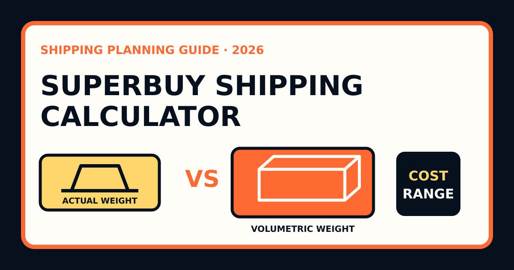

What a shipping calculator can actually tell you
A Superbuy shipping calculator is most useful as a planning tool. Before warehouse arrival, it can help compare destinations, approximate parcel weights and broad route classes. After the goods are measured, it can support a more informed parcel decision. It cannot know the final packed dimensions, current eligibility of every item or the carrier's verified billing data before those facts exist.
This is why two buyers with the same product value can receive very different shipping outcomes. Their parcels may differ in weight, size, original packaging, protection, destination and restricted-item classification. A credible estimate states those assumptions and returns a range. A calculator that shows one precise number without explaining its inputs creates confidence that the data does not support.
Separate four different weight concepts
Estimated item weight is the figure used before the seller's parcel reaches the warehouse. It may come from a listing, a category average or another buyer's example. Warehouse item weight is the recorded weight after arrival. Packed parcel weight includes outer packaging and protective materials. Chargeable weight is the weight basis used by the selected route, which may be actual weight, volumetric weight or another rule defined by the carrier.
Do not overwrite one figure with the next. Keeping each value shows where the forecast changed. If warehouse weight repeatedly exceeds seller estimates for a category, adjust future planning. If packed weight is consistently much higher, investigate packaging choices rather than assuming the calculator failed.
| Input | When available | How to use it |
|---|---|---|
| Seller estimate | Before purchase | Build a wide early range |
| Warehouse weight | After arrival | Replace the category assumption |
| Parcel dimensions | After packing or rehearsal | Test volumetric exposure |
| Verified carrier data | During final settlement | Close the record and measure variance |
Why volumetric weight changes the result
Actual weight is measured on a scale. Volumetric weight converts the space occupied by the parcel into a billable equivalent. Carriers use it because a lightweight box can consume a large share of aircraft or vehicle capacity. Depending on the line, the higher of scale and volumetric calculations may control the charge.
Do not assume one universal divisor or formula applies to every Superbuy route. The formula, threshold and treatment of dimensions can vary. Use the live rule associated with the eligible line being considered. The general lesson is stable even when route details change: a boxed pair of shoes, structured bag or heavily protected fragile item can cost more than its scale weight suggests.
Build a low, working and stress estimate
The low case assumes compact packing, compatible goods and a favorable eligible route. The working case uses realistic warehouse weights, a normal allowance for outer packaging and the route you would actually be comfortable choosing. The stress case assumes more volume, extra protection or a less favorable route that still accepts the goods.
For each case, record destination, item mix, actual weight, estimated dimensions, packaging choice, restriction class and route type. Add payment-conversion cost and a separate destination-charge scenario where relevant. The gap between the cases is not an error; it is the price of uncertainty before the parcel exists.
Estimate packaging as part of the parcel
Retail boxes are not automatically waste. They can protect shoes, electronics, collectibles and structured goods. They may also preserve labels or serial information needed after delivery. Removing them can reduce size but may create damage or evidence risk. Ask what the packaging does before requesting disposal.
Protective services also change the estimate. Bubble cushioning, corner protection, moisture barriers, stronger cartons and void fill can add weight or dimensions. Vacuum packing may reduce volume for suitable soft goods but is not appropriate for every material or structured item. Estimate the parcel after the chosen protection, not as though warehouse staff will ship the bare products.
Check eligibility before comparing rates
A low price is irrelevant if the line cannot accept the parcel. Batteries, liquids, cosmetics, food, magnets, oversized goods and some branded products can affect available routes. The destination adds its own customs and import requirements. Use the classifications and options shown for the actual stored items rather than a route screenshot from a different buyer.
If one item removes most suitable choices, model it separately. A split can sometimes restore a useful line for the remaining goods, reduce volumetric exposure or isolate a fragile product. On the other hand, splitting repeats base charges and creates multiple tracking and customs events. Compare the total cost and risk of both structures.
Allocate international shipping to products honestly
When reviewing whether a product was truly inexpensive, equal allocation is often misleading. Ten items do not necessarily use equal space or weight. A dense accessory and a boxed pair of shoes should not automatically receive the same share of international freight.
Use weight-based allocation for dense products, volume-based allocation for bulky products, and assign special route premiums to the item that caused them. This reveals which products remain good value after delivery. It also prevents one attractive marketplace price from being subsidized invisibly by the rest of the parcel.
Compare routes beyond the headline price
For every eligible option, record the shipping charge, estimated delivery range, tracking quality, maximum dimensions, restriction rules and compensation conditions. A slower but well-tracked route may be rational for non-urgent goods. A cheap route with unsuitable size limits is not a real alternative. A faster line may be worthwhile for time-sensitive seller remedies or events, but no estimate should be presented as a guaranteed arrival date.
Customs treatment also matters. Taxes, brokerage and inspections can occur outside the quoted international freight. Do not label a route “tax free” unless the current official conditions for that exact line and destination support the description. Even then, keep the wording bounded and preserve the checkout record.
Understand deposit and final settlement
The international shipping amount collected at parcel submission may rely on available parcel information and the selected route. Final logistics data can produce an adjustment. Keep the quoted deposit, final charge and returned or additional balance in separate cells. The difference is valuable evidence for future estimates.
Calculate two variances: pre-order forecast versus warehouse estimate, then warehouse estimate versus final parcel charge. The first identifies weak product assumptions. The second identifies packing, dimensional or route assumptions. After several parcels, destination-specific history becomes more accurate than a generic public example.
A practical calculator input sheet
- Destination country and postal region where relevant.
- Each item's warehouse weight and approximate dimensions.
- Battery, liquid, magnetic, branded or other restriction flags.
- Whether retail packaging will remain.
- Required protection and likely outer-carton allowance.
- Combined and split-parcel scenarios.
- Eligible route price, delivery range and billing rule.
- Quoted deposit, final charge and variance after dispatch.
Common shipping-estimate mistakes
- Multiplying kilograms by one universal rate.
- Using product weight while ignoring cartons and protection.
- Applying one volumetric formula to every line.
- Comparing routes before checking item eligibility.
- Removing all boxes without considering protection.
- Assuming consolidation always costs less.
- Calling an early estimate a guaranteed quote.
- Failing to record the final settlement.
Worked example: from product data to a parcel range
Suppose three warehouse items have estimated product weights of 0.8 kg, 1.1 kg and 0.6 kg. Their combined product weight is 2.5 kg, but that is not yet the parcel weight. A planning sheet might add 0.35 kg for the carton and protection, producing a working actual-weight estimate of 2.85 kg. The packaging allowance is an assumption until the warehouse provides the measured result.
Next estimate the packed dimensions. If the working carton is 42 × 32 × 24 cm, its volume is 32,256 cubic centimetres. A route using a 6,000 divisor would produce 5.376 kg of volumetric weight; a route using 5,000 would produce 6.451 kg. These are examples for modelling, not claims about a specific current Superbuy route. If the carrier bills the larger of actual and volumetric weight, the parcel can price like a five-to-six-kilogram shipment even though the scale estimate is below three kilograms.
The example shows why packaging choices belong in the calculator. Removing an unnecessary presentation box could reduce one dimension enough to lower the volumetric tier. Conversely, adding corner protection for a fragile item might be worth a higher billable weight. Ask whether the change preserves product safety and evidence; a smaller parcel is not a saving if it creates a likely damage claim.
Finally, run the route's published billing increment against low, working and stress cases. Keep any customs, taxes, insurance and optional service charges separate from transport so assumptions remain visible. Once the packed parcel appears in the account, replace all estimated measurements and route rules with the live values. The spreadsheet has done its job when it explains the range and highlights which input changed—not when it pretends an early estimate was a guaranteed quote.
How to use the estimator on this site
The homepage estimator intentionally returns a range. Enter the best current weight, choose the destination and select a parcel profile that reflects soft goods, volumetric exposure or sensitive-item planning. Use the output as an early budget check, then replace it with live Superbuy route data when the items and measurements are available.
Practical rule: a shipping calculator should narrow uncertainty, not hide it. Record the weight source, dimensions, packaging, eligibility and route assumption behind every result, then reconcile the estimate with the final bill.